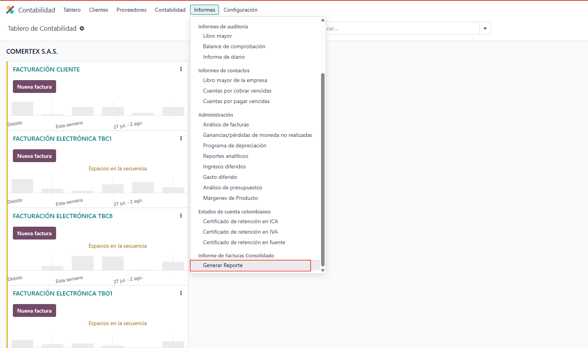
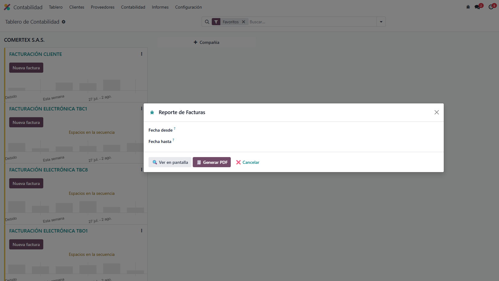

<section class="oe_container">
  <div class="oe_row oe_spaced">
    <div class="oe_span12">
      <h2 class="oe_slogan">Reporte Consolidado de Facturas</h2>
      <h3 class="oe_slogan">Contabilidad + Punto de Venta</h3>
      <p class="oe_mt32">
        Este módulo permite generar un informe consolidado de todas las facturas emitidas desde la Contabilidad y el Punto de Venta (POS) de Odoo. 
        Podrás filtrar por fechas, ver los resultados en pantalla o exportarlos en PDF.
      </p>
      <ul>
        <li>Filtro por rango de fechas</li>
        <li>Vista tipo lista</li>
        <li>Exportación directa en PDF</li>
        <li>Cliente, Medio de Pago, Diario, Número de factura</li>
      </ul>
      <p><strong>Desarrollado por JMA SAS</strong></p>
      
      <br/>
      

    </div>
  </div>
</section>
